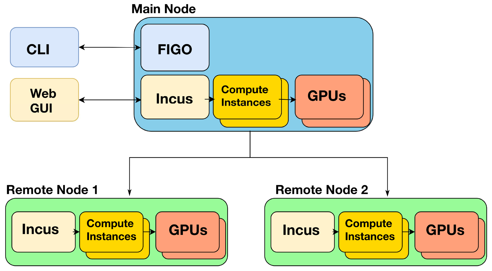
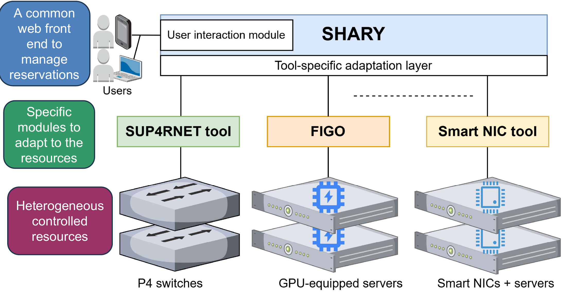
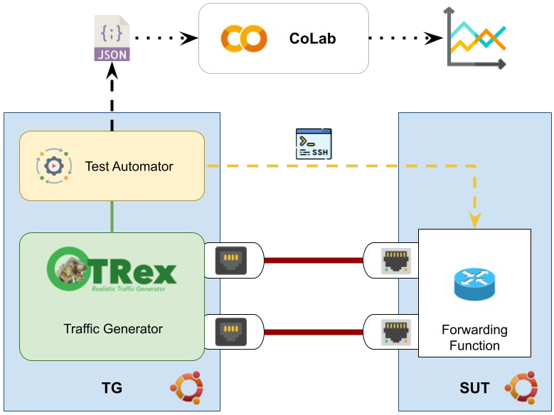
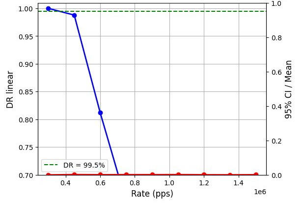
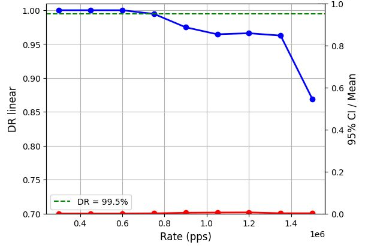

SUPER: from the programmable data plane to the sovereign cloud
Open-source components for high-availability cloud/edge infrastructures with GPU sharing
S. Salsano1,2, A. Mayer1,2, P. Loreti1,2, L. Bracciale1,2, M. Orazi1 1University of Rome Tor Vergata, Italy · 2CNIT
Tor Vergata Innovation Day — 7 October 2026, Rome, Italy
PNRR · RESTART · Spoke 4 · Sub-project S2 SUPER
The challenges
1
Expensive, underused GPUs. Static assignment to VMs and containers.
2
Lock-in. Licensing costs of proprietary platforms.
3
Reliable measurements. Performance in virtualized environments.
4
Per-flow monitoring. Fine-grained traffic metrics, without overloading the nodes.
FIGO Federated Infrastructure for GPU Orchestration
Today
OpenStack-like managers assign GPUs statically
An allocated GPU stays locked to its VM
…even when the VM is not running
With FIGO
Dynamic GPU allocation to VMs and containers
Owners keep priority on their GPUs
Idle GPUs are shared across the federation
Takeaway. Higher GPU utilization, and GPU access for researchers who have none.
FIGO — architecture
Built on incus
Manages VMs and containers
GPU profiles and users
Federated remote nodes
Open source: github.com/StefanoSalsano/figo

Each remote node runs incus, coordinated by the main node
FIGO — command line Live demo
# Create a new user
figo user add john_doe -e john@example.com -n "John Doe" \
-o "Example Corp" -w -k -s
# Enroll a remote node
figo remote enroll my_remote 192.168.1.100 8443 ubuntu \
~/.config/incus/client.crt /var/lib/incus/server.crt --loc_name main
# Attach a GPU to an instance on a remote node
figo gpu add my_remote:my_project.instance_name
One CLI for instances, GPU profiles, users and remote nodes.
SHARY SHaring Any Resource made easY
One web front end: Prognose
to book RESTART testbed resources:
GPUs, SmartNICs, P4 switches
Calendar booking, conflict checks
Specific module per resource
IEEE NOMS 2025 — Sharing GPUs and Programmable Switches in a Federated Testbed with SHARY

Common front end and specific modules for each resource
From booking to GPU: Prognose + FIGO
GRM — GPU Reservation Manager, an external webhook
Reservation intent (Prognose) separated from enforcement (FIGO)
Resilient to duplicate events, GRM restarts, FIGO unavailability
Takeaway. Enforceable GPU reservations, without modifying the reservation platform.
E. Yazdani, MSc thesis, University of Rome Tor Vergata, A.Y. 2024–25 · Prognose: docs.prognose.crownlabs.polito.it
PASTRAMI — trustworthy performance measurements
Performance Assessment of SofTware Routers Addressing Measurement Inaccuracy
Traffic generator → system under test
Linux software routers (e.g., SRv6)
Scans a wide range of rates
Loss and delivery curves, 95% CI
Is PDR@0.5% reliable here?
PDR@0.5% = Partial Drop Rate: max rate with ≤0.5% loss

Test automator, TRex traffic generator, system under test, Colab post-processing
PASTRAMI — is the measurement reliable?

Good: sharp transition to saturation → PDR@0.5% is reliable

Bad: gradual losses → PDR@0.5% alone is misleading
Saturation detected via the Throughput Increase Ratio
netrace: eBPF CPU-load tracing — Linux kernel versions behave differently
Open source: github.com/netgroup/pastrami
eFFECT — per-flow monitoring with eBPF
Flow-level metrics collected in the kernel
High temporal granularity, minimal overhead
Takeaway. Per-flow metrics, from the kernel to Grafana dashboards.
Towards the sovereign cloud
An open-source, high-availability cloud/datacenter platform, sovereign and lock-in free, with GPU sharing for AI workloads.
CloudStackLinuxeBPFSRv6GPU sharing
Platform base TRL 9
CloudStack in high availability, in operation in Common Net datacenters.
SUPER components
Open-source prototypes FIGO, SHARY, PASTRAMI, eFFECT converging into the platform.
Also in SUPER: XDP-accelerated IDS (Suricata); adaptive SRv6 paths for LLM training.
Nano-f — from research to market
Local and sovereign infrastructures, designed with hyperscale efficiency principles
Spin-off of the University of Rome Tor Vergata, approved, being incorporated
Industrial and commercial partner: Common Net, cloud provider and ISP
Private and sovereign clouds, edge cloud, GPU-as-a-Service
Advanced networking: Linux, eBPF, SRv6
For ISPs, cloud providers, enterprises and public administration